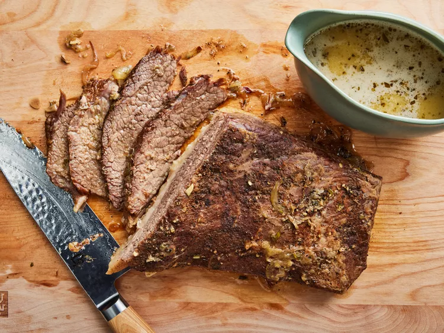

Beef Brisket

Not only is this apple and onion smothered beef brisket easy and delicious, it's also very fast (for a brisket recipe)!
Cooking it low and slow often results in dried-out meat, so instead we dial up the temperature slightly and bake it in about half the time to ensure it's both tender and moist.
Ingredients
Brisket
- 11⁄2 kg of irst-cut brisket (or flat-cut), trimmed of fat
- 4 teaspoons kosher salt
- 2 teaspoons freshly ground black pepper
- 1⁄2 teaspoon cayenne pepper
Braising Liquid
- 2 tablespoons butter
- 1 large yellow onion, sliced
- 1 teaspoon kosher salt
- 4 cloves garlic, sliced
- 1 tablespoon minced fresh rosemary
- 1 cup apple juice
Directions
- Season both sides of the brisket generously with salt, pepper, and cayenne. For best results, place brisket over an aluminum foil "rack" set over a plate and refrigerate, uncovered, 8 to 12 hours.
- Preheat the oven to 325 degrees F (165 degrees C).
- Melt butter in a saucepan over medium heat. Add onion and salt. Cook and stir until translucent, about 5 minutes.
Stir in garlic, rosemary, and apple juice. Increase heat to high and boil until liquid is reduced by about half, about 3 minutes.
- Transfer half of the apple-onion mixture into a baking dish. Place brisket fat-side up on top; cover with remaining apple-onion mixture. Cover baking dish tightly with foil.
- Bake in the preheated oven for 1 hour 30 minutes. Reduce oven temperature to 250 degrees F (121 degrees C) and bake until fork-tender, about 2 hours 15 minutes. Check for doneness after 2 hours.
- Transfer brisket to a plate and tent with foil.
- Pour the onions and braising liquid into a large measuring cup or bowl. Skim some fat off the top. Puree with a stick blender to create a gravy.
- Slice brisket across the grain and serve with the gravy.
- Enjoy!